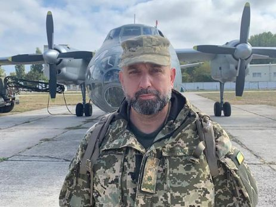

Сергей Кривонос остается заместителем секретаря Совета национальной безопасности и обороны Украины, его вывод из состава ряда межведомственных комиссий и групп сопряжен с перераспределением функциональных обязанностей, сообщили в СНБО.
В Совете национальной безопасности и обороне Украины сообщили, что вывод замсекретаря СНБО Сергея Кривоноса из межведомственной комиссии по политике военно-технического сотрудничества и экспортного контроля и рабочей группы по подготовке предложений по укреплению обороноспособности государства не имеет политической составляющей. Об этом сегодня сообщила пресс-служба СНБО
"Сергей Кривонос остается заместителем секретаря СНБО Украины. Его вывод из состава ряда межведомственных комиссий и групп сопряжен с перераспределением функциональных обязанностей, и является рабочим процессом, который не имеет никакой политической составляющей. Также необходимо отметить, что Кривонос является прикомандированным к аппарату СНБО Украины из Министерства обороны Украины, и может быть возвращен в распоряжение Министра обороны Украины в соответствии с поставленными задачами", – говорится в сообщении пресс-службы.
29 ноября президент Украины Владимир Зеленский уволил Кривоноса с должности главы одной комиссии и вывел из состава другой.
Последний высказал мнение, что его увольнение инициировал секретарь СНБО Алексей Данилов, и назвал совет "посмешищем с клоунами".
По его словам, у "определенных должностных лиц" нет желания реализовать программу по повышению обороноспособности Украины "Пять шагов".
12 марта экс-президент Украины Петр Порошенко, который тогда баллотировался на второй срок, назначил Кривоноса на должность заместителя секретаря СНБО. Перед этим Кривонос снял свою кандидатуру с выборов президента Украины в пользу Порошенко.